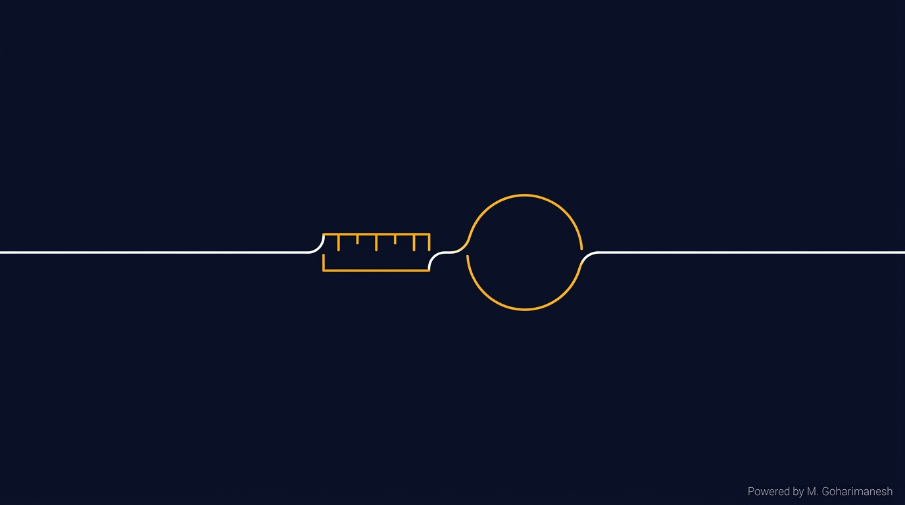
تعریف اندازهگیری
فرآیند تعیین مقدار یک کمیت فیزیکی با مقایسه آن با یک استاندارد مشخص را
اندازهگیری مینامند.
نتیجه این فرآیند همیشه یک عدد به همراه یکا است.
سنسور، ترانسدیوسر و ترانسمیتر
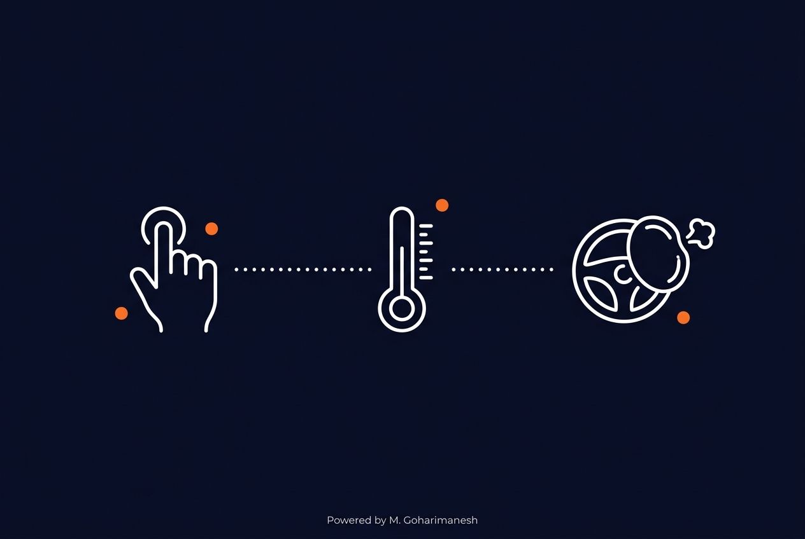
چگونه گوشی شما میفهمد که انگشتتان را روی صفحه گذاشتهاید؟
چگونه ترموستات خانه، دمای اتاق را تنظیم میکند؟
چگونه خودروی شما میفهمد که باید کیسه هوا را باز کند؟

فرآیند تعیین مقدار یک کمیت فیزیکی با مقایسه آن با یک استاندارد مشخص را
اندازهگیری مینامند.
نتیجه این فرآیند همیشه یک عدد به همراه یکا است.
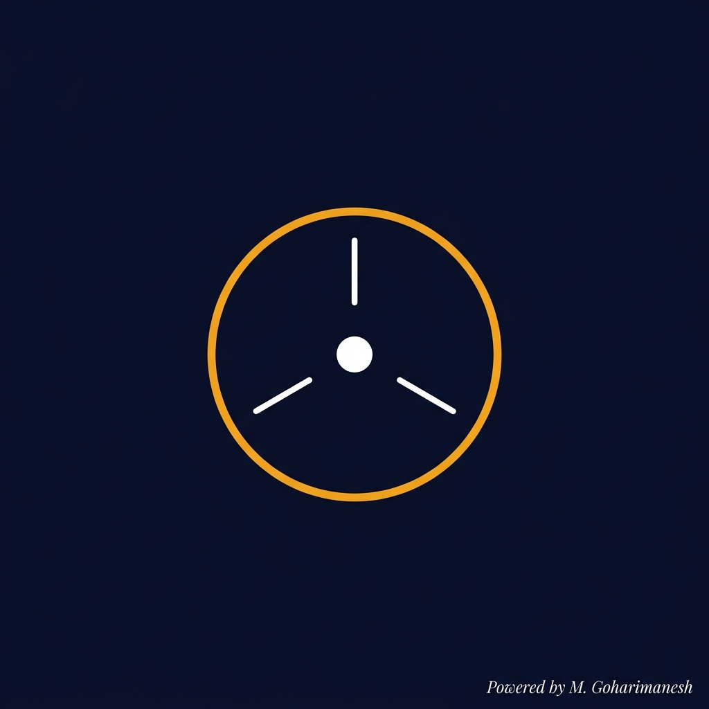
عنصری که یک کمیت فیزیکی را حس میکند و به سیگنال قابل استفاده تبدیل مینماید.
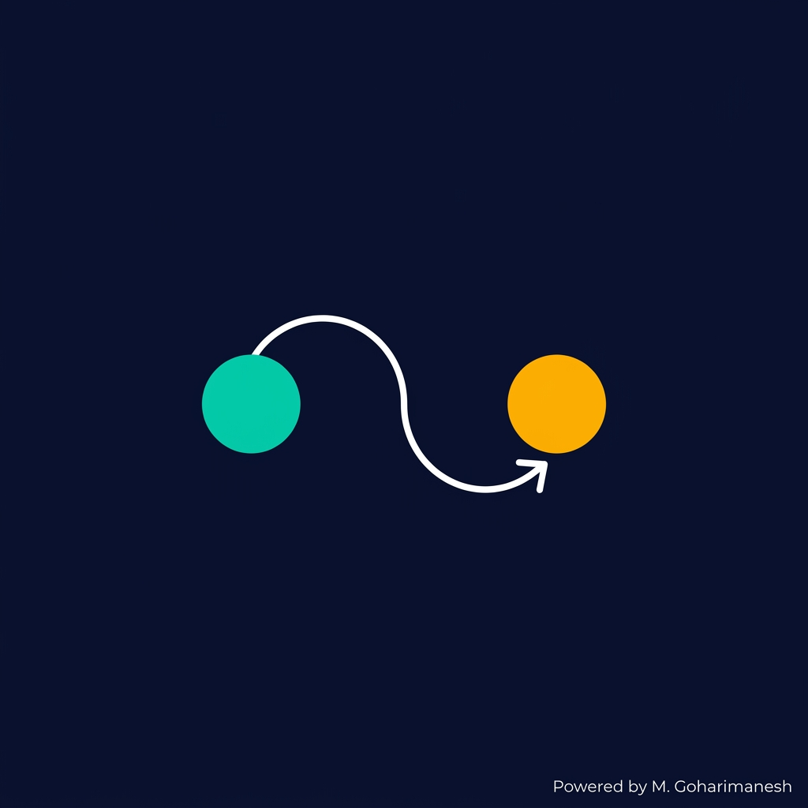
عنصری که یک شکل از انرژی را به شکل دیگر تبدیل میکند.
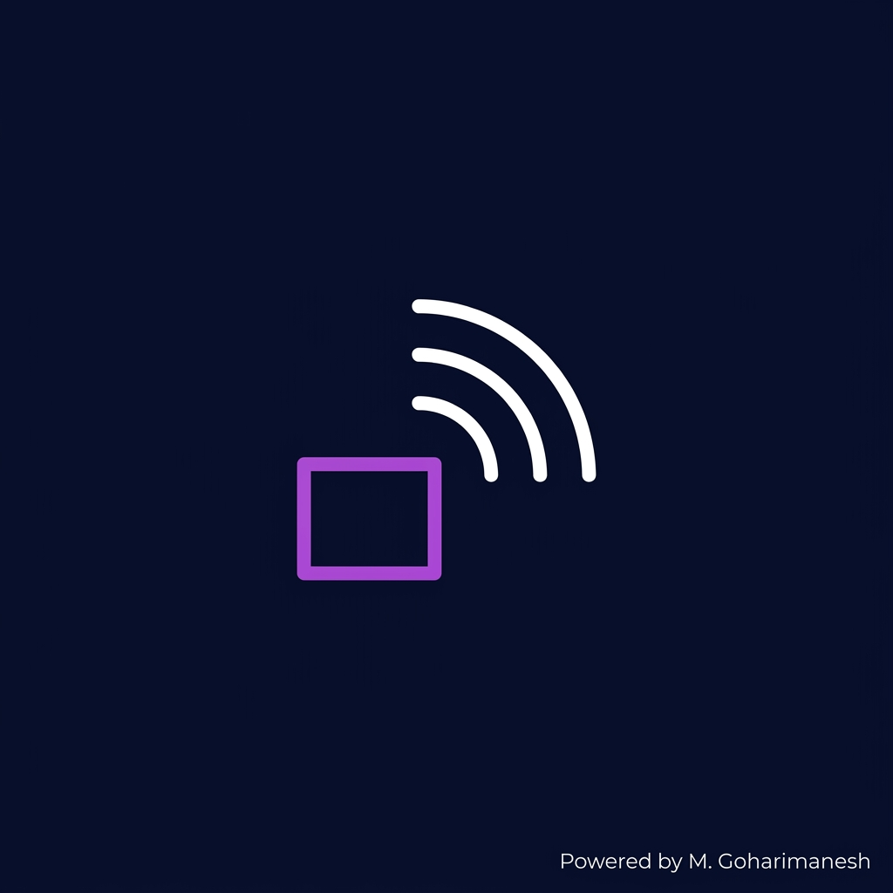
سیگنال سنسور را به استاندارد صنعتی (مثل ۴-۲۰mA) تبدیل و ارسال میکند.
همیشه ورودی است — کمیت فیزیکی را از محیط میگیرد. خروجی آن یک سیگنال الکتریکی، نوری، مکانیکی و... است.
مفهومی عامتر از سنسور است. هر سنسور یک ترانسدیوسر است، اما هر ترانسدیوسری الزاماً سنسور نیست.
ترکیبی از سنسور + مبدل سیگنال + مدار ارسال. خروجی آن برای انتقال در فواصل طولانی بهینه شده است.
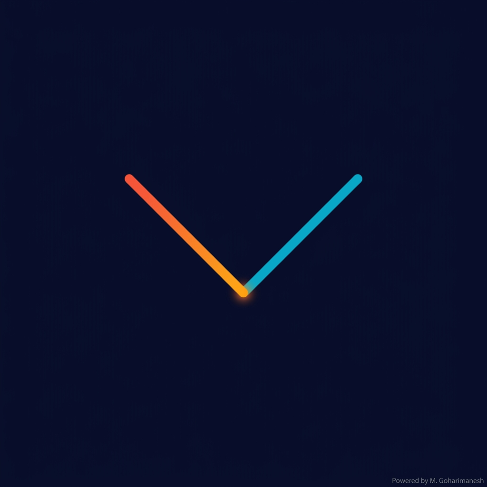
ترموکوپل از دو فلز غیرهمجنس ساخته میشود. وقتی دو سر آن در دماهای مختلف قرار گیرد، نیروی محرکه الکتریکی (emf) تولید میشود. این پدیده به «اثر سیبک» معروف است.
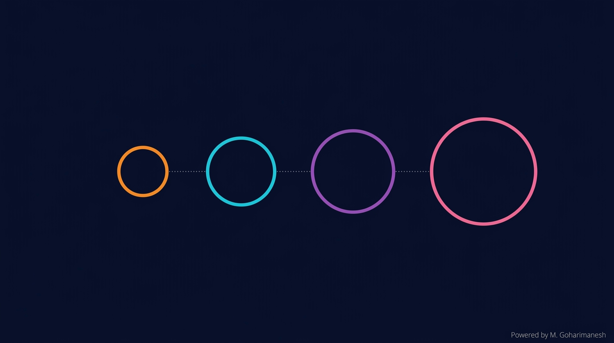
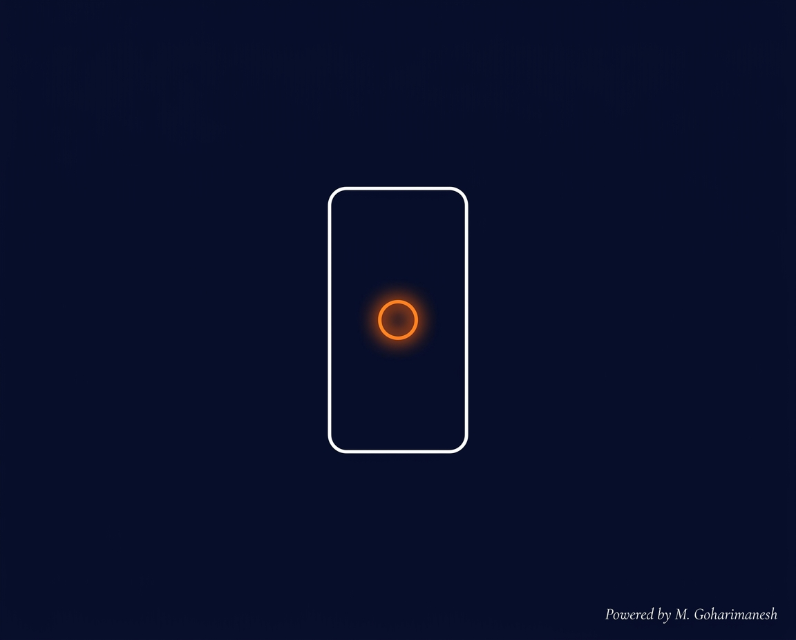
تشخیص لمس، چرخش صفحه، تنظیم روشنایی
سنسور خازنی + شتابسنج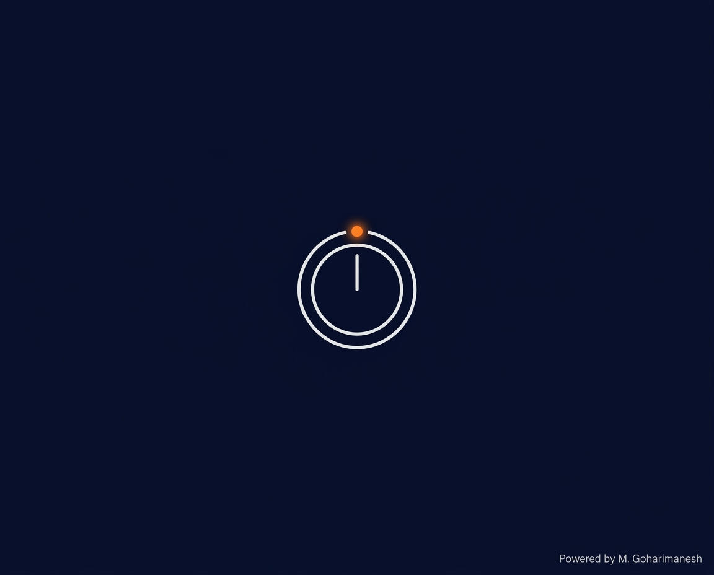
کنترل دمای محیط به صورت خودکار
ترمیستور / DHT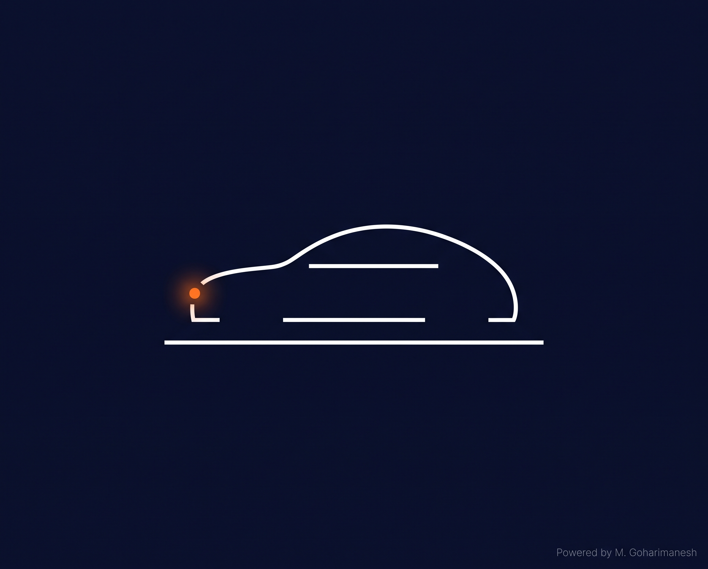
کیسه هوا، سیستم ترمز ABS، پارک خودکار
شتابسنج + اولتراسونیک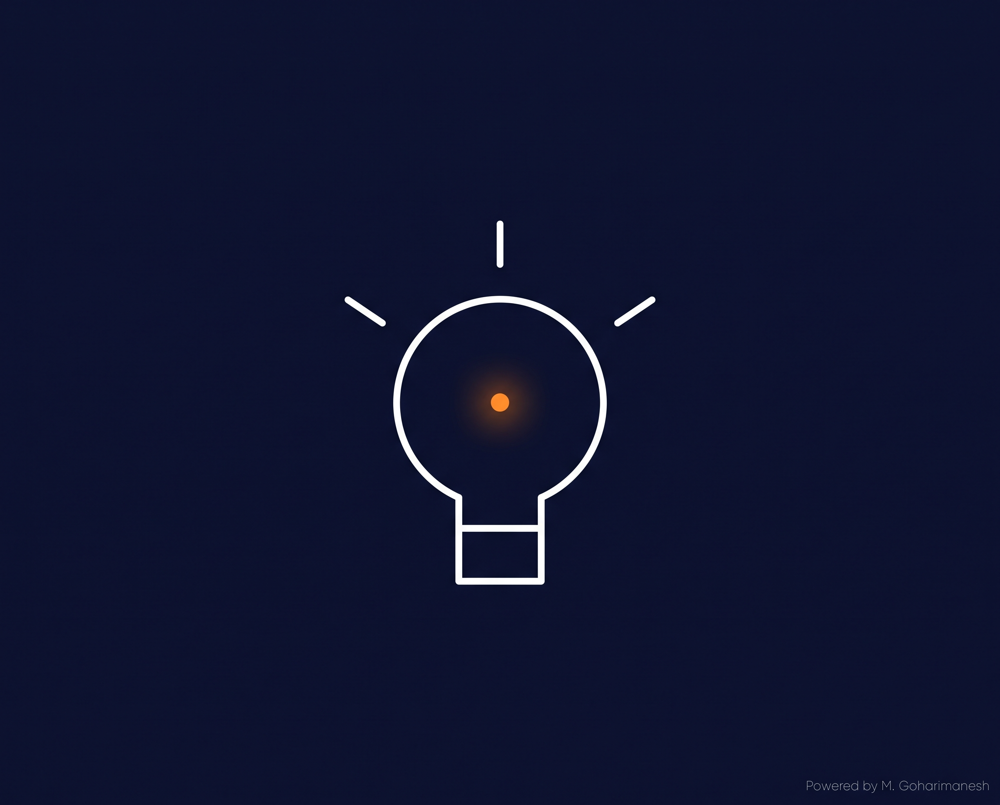
روشن/خاموش شدن خودکار چراغها
PIR + LDR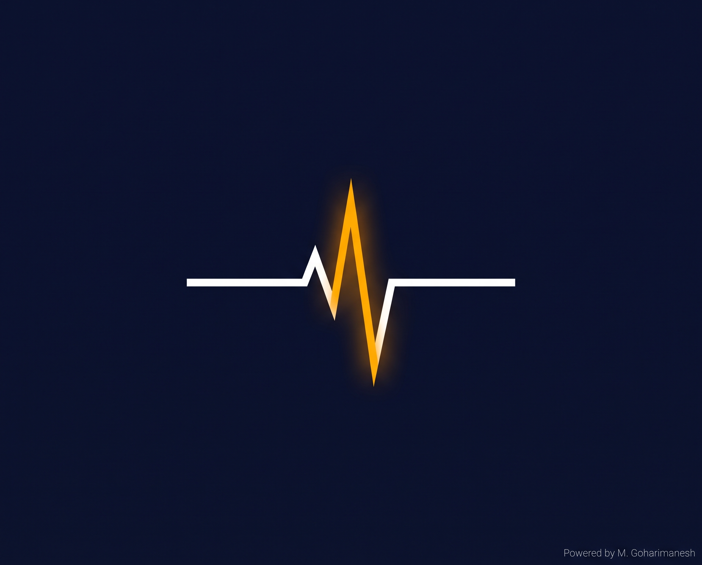
فشارسنج، پالساکسیمتر، نوار قلب
فشار + نوری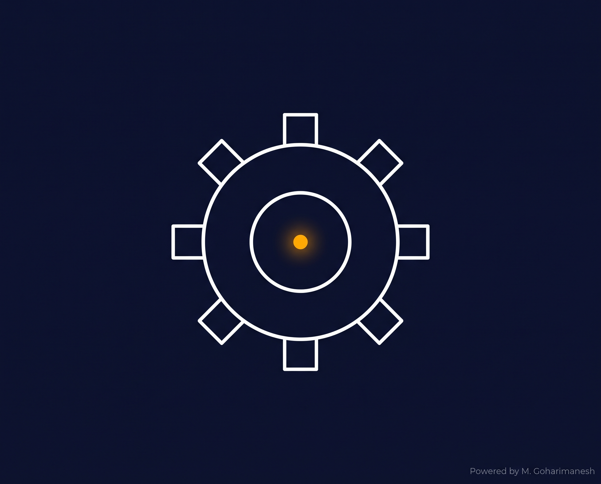
کنترل فرآیند، پایش خط تولید
همه انواع سنسورهاکمیت فیزیکی را حس میکند و به سیگنال قابل استفاده تبدیل مینماید.
یک شکل از انرژی را به شکل دیگر تبدیل میکند.
سیگنال را به استاندارد صنعتی تبدیل و برای انتقال آماده میکند.
هم سنسور است و هم ترانسدیوسر — نمونهای کلاسیک از همپوشانی مفاهیم.
گروههای سهنفره در ۱۰ دقیقه باید در محوطهٔ دانشکده پنج سنسور متفاوت پیدا کرده و با عکس مستند کنند. برای هر سنسور، کمیت فیزیکی و نوع ترانسدیوسر را مشخص نمایند.
🏆 معیار داوری: سرعت + صحت دستهبندی + خلاقیت در مستندسازی. گروه برنده، امتیاز ویژهٔ کلاسی دریافت میکند.
در این جلسه یاد گرفتیم که:
سنسور کمیت فیزیکی را حس میکند، ترانسدیوسر انرژی را تبدیل میکند، و ترانسمیتر سیگنال را برای انتقال آماده میسازد.
از توجه و همراهی شما سپاسگزارم
منابع پیشنهادی: Sensors and Transducers (Sinclair) — فصل ۱